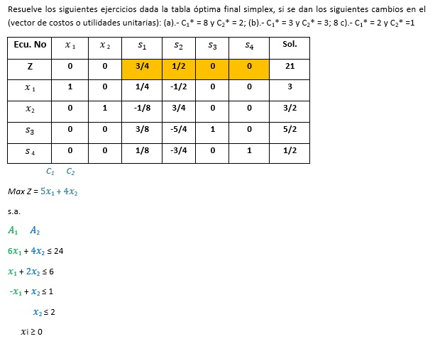

Dado los siguientes problemas primales, obtener sus correspondientes problemas duales:
a) Máx Z=X1+3X2-2X3
Sujeto a
2X1+3X2-4X3≤5
4X1-X2+ 2X3≤15
3X1+6X2+3X3≤12
Xi≥0
b) a) Min Z=5X1-3X2+4X3
Sujeto a
2X1+3X2 ≥4
-2X1 -4X3≤3
X1 + X3≥2
Xi≥0,
c) Máx Z=6X1+X2-2X3
Sujeto a
2X1+4X2-2X3≥3
4X1 -2X3≥2
5X2-X3≥4
Xi≥0
Encuentre la solución dual óptima a partir de la solución óptima del problema primal e interprétela económicamente.
(BUSCAR DOS EJERCICIOS Y ADAPTARLOS PARA QUE NO SEAN LOS MISMOS)
Resuelva los siguientes ejercicios aplicando el Método Simplex Dual:
a) Minimizar Z = 2x 1 +3x 2
Sujeto a:
x 1 + x 2 = 1
3x 1 - x 2 ≥ 2
xi≥0
b) Minimizar Z = 500x 1 +600 x2
Sujeto a:
10x 1 + ≥ 100
100x 1 + 200x2 ≥ 8000
250x 1 + 300x2 ≥ 15000
xi≥0
c) Maximizar Z = 3x 1- x 2 + 3 x 3
Sujeto a:
x1 + 2x 2 + 2x 3 ≤ 40
2x 1 - x 2 + x 3 ≤ 8
4x 1 - 2x 2 + x 3 ≤10
xi≥0
CAMBIOS EN LA DISPONIBILIDAD DE RECURSOS (VECTOR B)
Resuelve los siguientes ejercicios dada la tabla óptima final simplex, si se dan los siguientes cambios en el vector (disponibilidad de recursos) b1* = ( 5 3 4 5 ), b2* = ( 1 2 3 1 ), b3* = ( 2 5 3 4 )
Max Z = 4x1 +3x 2
s.a.
2x1 + 3x2 ≤ 6
-3x1 + 2x2 ≤ 3
2x2 ≤ 5
2x1 + x2 ≤ 4
x i ≥ 0
CAMBIOS EN LOS COSTOS O UTILIDADES UNITARIAS (VECTOR C)

Elaboración propia
CAMBIOS EN LOS COEFICIENTES TECNOLÓGICOS (Matriz aij)
Elaboración propia
Se requiere agregar la variable (a) 7x3 en la función objetivo y el vector A3 = ( 9 7 3 )
Resuelve el siguiente ejercicio dada la tabla óptima final simplex, si se adiciona una nueva restricción en la matriz aij: